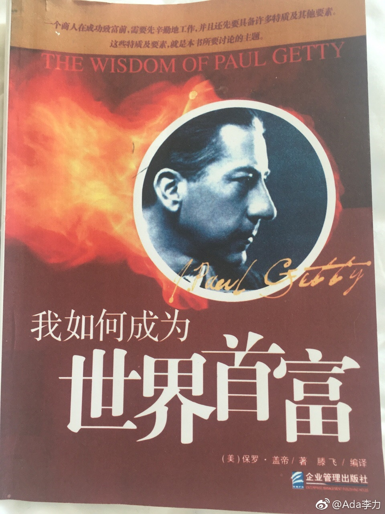

#读书# 之前听过保罗盖帝是豪门八卦，他的孙子辈命运都不大好，一个孙子曾被绑架两次，这个首富第二次对赎金讨价还价，孙子被割了一只耳朵，还好最后命保下来了。所以印象中，保罗盖帝是个吝啬苛刻的古怪老头。
如果不是有可靠推荐，我很可能不会看这本书。但看上后，就被吸引住了，对保罗的印象大为改观。
这本书的写作年代应该是美国拓荒期的黄金年代，乐观，天真的气息在书中随处可见，保罗娓娓道来的一些对商业看法，到今天也很适用。
保罗以做生意人自豪，他认为做生意是一个特别需要创造性的工作，而且，因为生意关乎对人性的观察和了解，他认为生意人应该多学习人文方面的知识。他本人毕业于牛津大学，曾想当作家，这也是这本书很好读的原因。
书里面一件事能反映出保罗的狡黠和有趣，他视察工地时发现几位高管都对浪费现象不闻不问，他什么也没说，只是吩咐会计把几个高管当月的工资少发了5块钱。果如他所料，少了5块钱的高管都气急败坏地来找他质问，他不紧不慢地回复：“工地上每日少了千元万元，你视而不见，工资单上少5块钱，你倒是发现得很迅速”
还没看完，好书总是舍不得那么快地读完。
如果不是有可靠推荐，我很可能不会看这本书。但看上后，就被吸引住了，对保罗的印象大为改观。
这本书的写作年代应该是美国拓荒期的黄金年代，乐观，天真的气息在书中随处可见，保罗娓娓道来的一些对商业看法，到今天也很适用。
保罗以做生意人自豪，他认为做生意是一个特别需要创造性的工作，而且，因为生意关乎对人性的观察和了解，他认为生意人应该多学习人文方面的知识。他本人毕业于牛津大学，曾想当作家，这也是这本书很好读的原因。
书里面一件事能反映出保罗的狡黠和有趣，他视察工地时发现几位高管都对浪费现象不闻不问，他什么也没说，只是吩咐会计把几个高管当月的工资少发了5块钱。果如他所料，少了5块钱的高管都气急败坏地来找他质问，他不紧不慢地回复：“工地上每日少了千元万元，你视而不见，工资单上少5块钱，你倒是发现得很迅速”
还没看完，好书总是舍不得那么快地读完。
- 